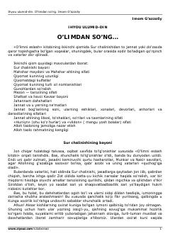

IUQiyomat, qabr azobi va oxirat voqealari bayon etilgan diniy-axloqiy asar.
Mazkur asar insonning vafotidan keyingi hayoti, qabr azobi, Qiyomat kunining dahshatlari, Mahshar maydoni va oxiratdagi hisob-kitob jarayonlarini Qur'on va hadislar asosida yoritib beradi. Kitobxonni oxiratga hozirlik ko'rishga, gunohlardan tijlanishga va Allohning rahmonligidan umid qilishga undaydi.